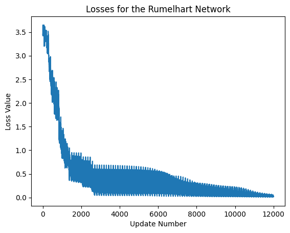
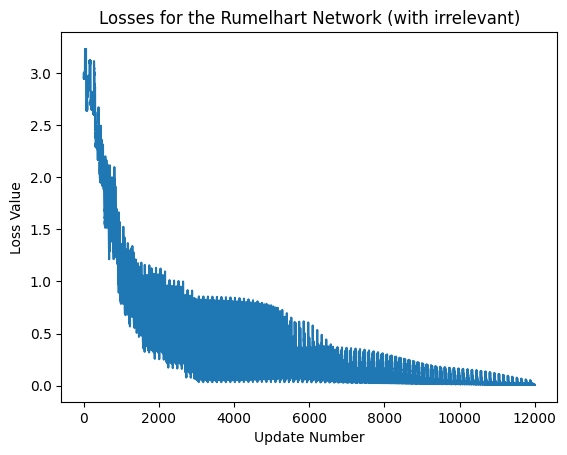
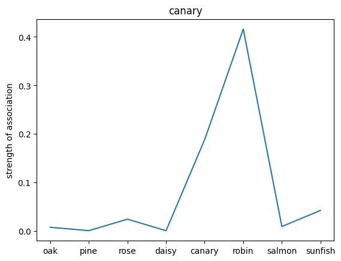
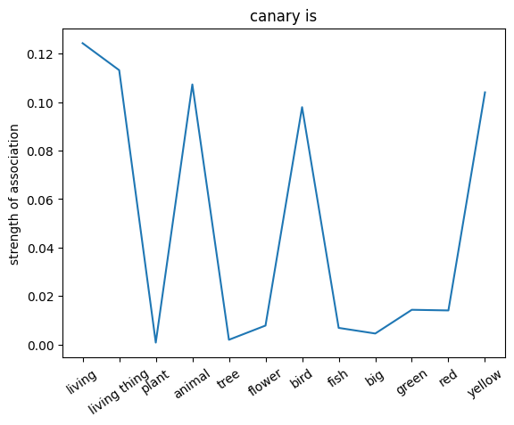
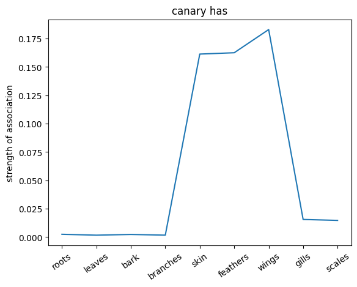
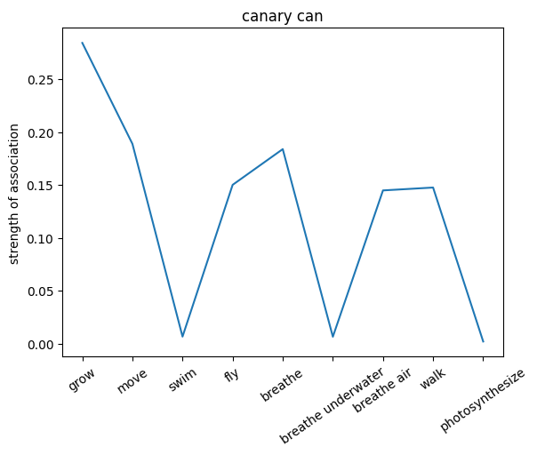
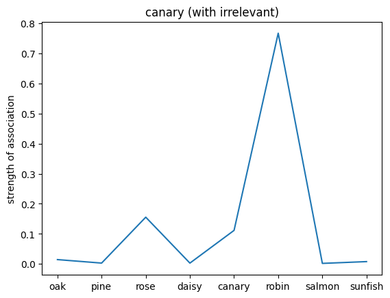
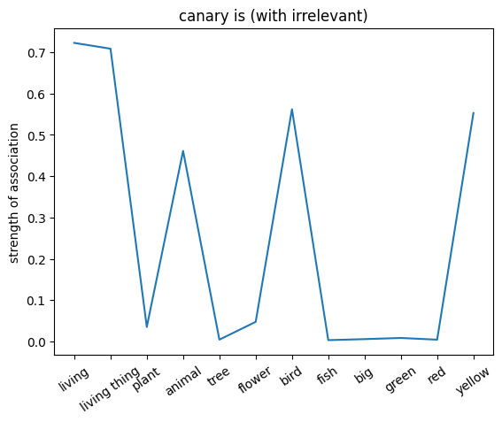
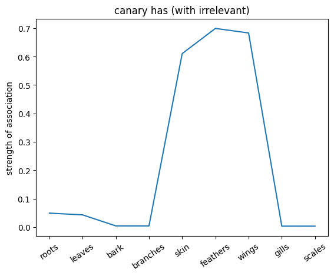
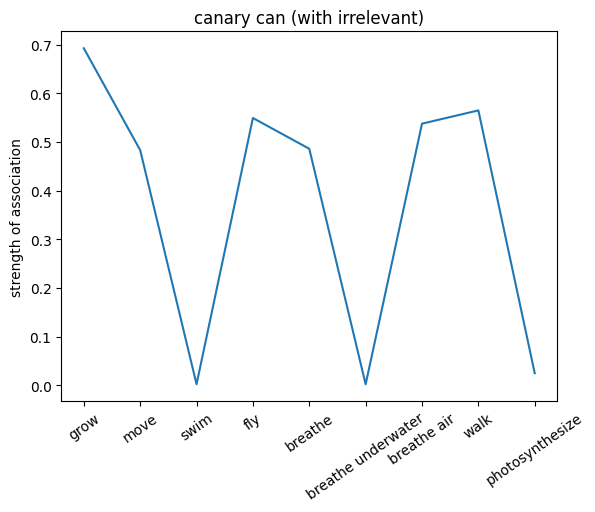

5.1 Rumelhart Semantic Network#
Note, the code in this notebook trains a network and may take a while to run. To save time, you can run the full notebook now while reading the introduction. Then, don’t rerun each cell while going through the notebook since that might reset the training.
Introduction#
Multilayer NN in Psychology: Semantics#
Our minds are full of associations, presumably implemented as connection strengths between concepts. But associations can have a wide variety of structure – they are not merely symmetric (e.g. “dog” and “mail carrier” are associated but have an asymmetric relationship – the mail carrier is less likely to bite the dog than vice a versa). Semantic networks are graphs used to model the relationships between concepts in the mind, and are a commonly used representation of knowledge. They are depicted as graphs, whose vertices are concepts and whose edges represent connections between concepts. A concept that is a noun is connected to its characteristics, but also to categories that it is a member of. Nouns that share a category (e.g. birds and dogs are both animals) both have a connection to that category, and share a higher-order connection between that category and a category to which it belongs (e.g. animals belong to the category living things).
In this way, semantic nets can contain a deductive logical hierarchy. One of the key features arising from this hierarchy is the “inheritance” property, which states that a concept belonging to a subcategory will inherit the properties of that subcategory and, by extension, any category to which the subcategory belongs.
To clarify, consider hearing the phrase “Blue-Footed Booby” for the first time. Initially, it contains very little information. If you are then told that it is the name of a bird, you’ll know that it must necessarily have feathers, a beak, feet, and eyes. You will also know that it is a living thing, and therefore grows and is comprised of cells. This is the inheritance property at work.

Dave Rumelhart used neural networks to model semantic networks, recreating structured knowledge representations using hidden layers and backprop learning.
In order to represent the semantic net computationally, Rumelhart came up with a particularly clever structure of a multi-layer network, with two input layers, two hidden layers, and four output layers.

When training networks of this structure, it was found that the represenational nodes, when adequately trained, came to represent distinguishing features of their inputs. They were internal representations of the concepts similar to those created in the human mind.
Let us explore his idea by building it ourselves.
Installation and Setup
%%capture
%pip install psyneulink
import numpy as np
import psyneulink as pnl
import matplotlib.pyplot as plt
Rumelhart’s Semantic Network#
The first thing we will do is create a data set with examples and labels that we can train the net on. We’ll be using a similar data set to the one in Rumelhart’s original paper on the semantic net Rumelhart, Hinton, and Williams (1986).
The “nouns” inputs are provided to you in a list, as are the “relations”. The relations consist of “I”, which is simply the list of nouns, “is” which is a list of largest categories to which the noun can belong, “has”, which are potential physical attributes, and “can”, which are abilities each noun possesses.
The network takes as input a pair of nouns and relations, which form a priming statement, such as “daisy is a”, and should produce a response from the network that includes both a list of what a daisy is, and lists of what a daisy has and can do, as well as the actual term “daisy”. This response mimics the brain’s priming response, by creating activation for concepts related to the one explicitly stated.
This is a slightly simplified model of Rumelhart’s network, which learned associations through internal structure only, not through explicit updating for every output.
# Stimuli and Relations
nouns = ['oak', 'pine', 'rose', 'daisy', 'canary', 'robin', 'salmon', 'sunfish']
relations = ['is', 'has', 'can']
is_list = ['living', 'living thing', 'plant', 'animal', 'tree', 'flower', 'bird', 'fish', 'big', 'green', 'red',
'yellow']
has_list = ['roots', 'leaves', 'bark', 'branches', 'skin', 'feathers', 'wings', 'gills', 'scales']
can_list = ['grow', 'move', 'swim', 'fly', 'breathe', 'breathe underwater', 'breathe air', 'walk', 'photosynthesize']
descriptors = [nouns, is_list, has_list, can_list]
truth_nouns = np.identity(len(nouns))
truth_is = np.zeros((len(nouns), len(is_list)))
truth_is[0, :] = [1, 1, 1, 0, 1, 0, 0, 0, 1, 0, 0, 0]
truth_is[1, :] = [1, 1, 1, 0, 1, 0, 0, 0, 1, 0, 0, 0]
truth_is[2, :] = [1, 1, 1, 0, 0, 1, 0, 0, 0, 0, 0, 0]
truth_is[3, :] = [1, 1, 1, 0, 0, 1, 0, 0, 0, 0, 0, 0] # <--- Exercise 1a What does this row represent?
truth_is[4, :] = [1, 1, 0, 1, 0, 0, 1, 0, 0, 0, 0, 1]
truth_is[5, :] = [1, 1, 0, 1, 0, 0, 1, 0, 0, 0, 0, 1]
truth_is[6, :] = [1, 1, 0, 1, 0, 0, 0, 1, 1, 0, 1, 0]
truth_is[7, :] = [1, 1, 0, 1, 0, 0, 0, 1, 1, 0, 0, 0]
truth_has = np.zeros((len(nouns), len(has_list)))
truth_has[0, :] = [1, 1, 1, 1, 0, 0, 0, 0, 0]
truth_has[1, :] = [1, 1, 1, 1, 0, 0, 0, 0, 0]
truth_has[2, :] = [1, 1, 0, 0, 0, 0, 0, 0, 0]
truth_has[3, :] = [1, 1, 0, 0, 0, 0, 0, 0, 0]
truth_has[4, :] = [0, 0, 0, 0, 1, 1, 1, 0, 0]
truth_has[5, :] = [0, 0, 0, 0, 1, 1, 1, 0, 0]
truth_has[6, :] = [0, 0, 0, 0, 0, 0, 0, 1, 1] # <--- Exercise 1b What does this row represent?
truth_has[7, :] = [0, 0, 0, 0, 0, 0, 0, 1, 1]
truth_can = np.zeros((len(nouns), len(can_list)))
truth_can[0, :] = [1, 0, 0, 0, 0, 0, 0, 0, 1]
truth_can[1, :] = [1, 0, 0, 0, 0, 0, 0, 0, 1] # <--- Exercise 1c What does this row represent?
truth_can[2, :] = [1, 0, 0, 0, 0, 0, 0, 0, 1]
truth_can[3, :] = [1, 0, 0, 0, 0, 0, 0, 0, 1]
truth_can[4, :] = [1, 1, 0, 1, 1, 0, 1, 1, 0]
truth_can[5, :] = [1, 1, 0, 1, 1, 0, 1, 1, 0]
truth_can[6, :] = [1, 1, 1, 0, 1, 1, 0, 0, 0]
truth_can[7, :] = [1, 1, 1, 0, 1, 1, 0, 0, 0]
truths = [[truth_nouns], [truth_is], [truth_has], [truth_can]]
🎯 Exercise 1
In the above code, there are three rows that are marked with comments. For each of these rows, identify the noun that it represents, and explain what the row is representing.
Exercise 1a
Remember:
nouns = ['oak', 'pine', 'rose', 'daisy', 'canary', 'robin', 'salmon', 'sunfish']
relations = ['is', 'has', 'can']
is_list = ['living', 'living thing', 'plant', 'animal', 'tree', 'flower', 'bird', 'fish', 'big', 'green', 'red',
'yellow']
has_list = ['roots', 'leaves', 'bark', 'branches', 'skin', 'feathers', 'wings', 'gills', 'scales']
can_list = ['grow', 'move', 'swim', 'fly', 'breathe', 'breathe underwater', 'breathe air', 'walk', 'photosynthesize']
what does the row truth_is[3, :] represent?
truth_is[3, :] = [1, 1, 1, 0, 0, 1, 0, 0, 0, 0, 0, 0]
✅ Solution 1a
The 3 in truth_is[3, :] refers to the 4th noun in the list of nouns (remember indexing in Python starts with 0), which is “daisy”.
[1, 1, 1, 0, 0, 1, 0, 0, 0, 0, 0, 0] can be interpreted as a list of 12 booleans, where 1 means true and 0 means false. We map this to the is_list, which is a list of 12 concepts.
That means:
1: “daisy” is a living thing
1: “daisy” is a living
1: “daisy” is a plant
0: “daisy” is not an animal
0: “daisy” is not a tree
1: “daisy” is a flower
0: “daisy” is not a bird
0: “daisy” is not a fish
0: “daisy” is not big
0: “daisy” is not green
0: “daisy” is not red
0: “daisy” is not yellow
Exercise 1b
Remember:
nouns = ['oak', 'pine', 'rose', 'daisy', 'canary', 'robin', 'salmon', 'sunfish']
relations = ['is', 'has', 'can']
is_list = ['living', 'living thing', 'plant', 'animal', 'tree', 'flower', 'bird', 'fish', 'big', 'green', 'red',
'yellow']
has_list = ['roots', 'leaves', 'bark', 'branches', 'skin', 'feathers', 'wings', 'gills', 'scales']
can_list = ['grow', 'move', 'swim', 'fly', 'breathe', 'breathe underwater', 'breathe air', 'walk', 'photosynthesize']
what does the row truth_has[6, :] represent?
truth_has[6, :] = [0, 0, 0, 0, 0, 0, 0, 1, 1]
✅ Solution 1b
salmon does not have roots
salmon does not have leaves
salmon does not have a bark
salmon does not have branches
salmon does not have skin
salmon does not have feathers
salmon does not have wings
salmon has gills
salmon has scales
Exercise 1c
Remember:
nouns = ['oak', 'pine', 'rose', 'daisy', 'canary', 'robin', 'salmon', 'sunfish']
relations = ['is', 'has', 'can']
is_list = ['living', 'living thing', 'plant', 'animal', 'tree', 'flower', 'bird', 'fish', 'big', 'green', 'red',
'yellow']
has_list = ['roots', 'leaves', 'bark', 'branches', 'skin', 'feathers', 'wings', 'gills', 'scales']
can_list = ['grow', 'move', 'swim', 'fly', 'breathe', 'breathe underwater', 'breathe air', 'walk', 'photosynthesize']
what does the row truth_can[1, :] represent?
truth_can[1, :] = [1, 0, 0, 0, 0, 0, 0, 0, 1]
✅ Solution 1c
pine can grow
pine cannot move
pine cannot swim
pine cannot fly
pine cannot breathe
pine cannot breathe underwater
pine cannot breathe air
pine cannot walk
pine can photosynthesize
Create the Inputs Set#
Here, we will create the input set for each of the nouns and relations. We will use one-hot encoding to represent the nouns and relations. Additionally, we will add single constant input to each of the vectors that will be used as a bias input for the network.
def gen_input_vals(nouns, relations):
rumel_nouns_bias=np.vstack((np.identity(len(nouns)),np.ones((1,len(nouns)))))
rumel_nouns_bias=rumel_nouns_bias.T
rumel_rels_bias=np.vstack((np.identity(len(relations)),np.ones((1,len(relations)))))
rumel_rels_bias=rumel_rels_bias.T
return (rumel_nouns_bias, rumel_rels_bias)
nouns_onehot, rels_onehot = gen_input_vals(nouns, relations)
r_nouns = np.shape(nouns_onehot)[0]
c_nouns = np.shape(nouns_onehot)[1]
r_rels = np.shape(rels_onehot)[0]
c_rels = np.shape(rels_onehot)[1]
print('Nouns Onehot\n:', nouns_onehot)
print('\nRelations Onehot\n:', rels_onehot)
print('\nNouns Shape:\n', np.shape(nouns_onehot))
print('\nRelations Shape:\n', np.shape(rels_onehot))
Nouns Onehot
: [[1. 0. 0. 0. 0. 0. 0. 0. 1.]
[0. 1. 0. 0. 0. 0. 0. 0. 1.]
[0. 0. 1. 0. 0. 0. 0. 0. 1.]
[0. 0. 0. 1. 0. 0. 0. 0. 1.]
[0. 0. 0. 0. 1. 0. 0. 0. 1.]
[0. 0. 0. 0. 0. 1. 0. 0. 1.]
[0. 0. 0. 0. 0. 0. 1. 0. 1.]
[0. 0. 0. 0. 0. 0. 0. 1. 1.]]
Relations Onehot
: [[1. 0. 0. 1.]
[0. 1. 0. 1.]
[0. 0. 1. 1.]]
Nouns Shape:
(8, 9)
Relations Shape:
(3, 4)
🎯 Exercise 2
Exercise 2a
This is the tensor nouns_onehot that was generated by the function gen_input_vals. What does the marked line represent?:
[[1. 0. 0. 0. 0. 0. 0. 0. 1.]
[0. 1. 0. 0. 0. 0. 0. 0. 1.]
[0. 0. 1. 0. 0. 0. 0. 0. 1.]
[0. 0. 0. 1. 0. 0. 0. 0. 1.]
[0. 0. 0. 0. 1. 0. 0. 0. 1.]
[0. 0. 0. 0. 0. 1. 0. 0. 1.] # <-- Exercise 2a
[0. 0. 0. 0. 0. 0. 1. 0. 1.]
[0. 0. 0. 0. 0. 0. 0. 1. 1.]]
✅ Solution 2a
The marked line represents the biased input for robin. The 1 at the 6th index represents the activation for robin and the 1 at the 9th index represents the bias input.
Exercise 2b
There seems to be a pattern in the shapes of the tensors:
nouns_onehothas a shape of(8, 9)rels_onehothas a shape of(3, 4)
The general form of the shape seems to be (i, i+1)
Can you explain what the i is and why the shape of the tensors is in this form?
✅ Solution 2b
The i is the number of elements. Without a bias term the tensor would be of shape (i, i) and look like an identity matrix. Since we add a bias term to each vector, the length of each vector increases by 1, but we still have i elements. This is why the shape of the tensors is (i, i+1).
Create the Network#
Now, we can set up the network according to Rumelhart’s architecture (see picture above).
First, let’s create the layers:
# Create the input layers
input_nouns = pnl.TransferMechanism(name="input_nouns",
input_shapes=c_nouns,
)
input_relations = pnl.TransferMechanism(name="input_relations",
input_shapes=c_rels,
)
# Create the hidden layers. Here we use a logistic activation function
# The number of hidden units is taken directly from Rumelhart's paper
hidden_nouns_units = 9
hidden_mixed_units = 16
hidden_nouns = pnl.TransferMechanism(name="hidden_nouns",
input_shapes=hidden_nouns_units,
function=pnl.Logistic()
)
hidden_mixed = pnl.TransferMechanism(name="hidden_mixed",
input_shapes=hidden_mixed_units,
function=pnl.Logistic()
)
# Create the output layers. Here we use a logistic activation function
output_I = pnl.TransferMechanism(name="output_I",
input_shapes=len(nouns),
function=pnl.Logistic()
)
output_is = pnl.TransferMechanism(name="output_is",
input_shapes=len(is_list),
function=pnl.Logistic()
)
output_has = pnl.TransferMechanism(name="output_has",
input_shapes=len(has_list),
function=pnl.Logistic()
)
output_can = pnl.TransferMechanism(name="output_can",
input_shapes=len(can_list),
function=pnl.Logistic()
)
Then, we can create the projections between the layers. We will use random matrices to connect the mechanisms to each other.
# Seed for reproducibility
np.random.seed(42)
# First, we create the projections from the input layers
# input_nouns -> hidden_nouns
map_in_nouns_h_nouns = pnl.MappingProjection(
matrix=np.random.rand(c_nouns, hidden_nouns_units),
name="map_in_nouns_h_nouns",
sender=input_nouns,
receiver=hidden_nouns
)
# input_relations -> hidden_mixed
map_in_rel_h_mixed = pnl.MappingProjection(
matrix=np.random.rand(c_rels, hidden_mixed_units),
name="map_in_rel_h_mixed",
sender=input_relations,
receiver=hidden_mixed
)
# Then, we create the projections between the hidden layers
# hidden_nouns -> hidden_mixed
map_h_nouns_h_mixed = pnl.MappingProjection(
matrix=np.random.rand(hidden_nouns_units, hidden_mixed_units),
name="map_h_nouns_h_mixed",
sender=hidden_nouns,
receiver=hidden_mixed
)
# Finally, we create the projections from the hidden layers to the output layers
# hidden_mixed -> output_I
map_h_mixed_out_I = pnl.MappingProjection(
matrix=np.random.rand(hidden_mixed_units, len(nouns)),
name="map_h_mixed_out_I",
sender=hidden_mixed,
receiver=output_I
)
# hidden_mixed -> output_is
map_h_mixed_out_is = pnl.MappingProjection(
matrix=np.random.rand(hidden_mixed_units, len(is_list)),
name="map_hm_is",
sender=hidden_mixed,
receiver=output_is
)
# hidden_mixed -> output_has
map_h_mixed_out_can = pnl.MappingProjection(
matrix=np.random.rand(hidden_mixed_units, len(has_list)),
name="map_h_mixed_out_can",
sender=hidden_mixed,
receiver=output_can
)
map_h_mixed_out_has = pnl.MappingProjection(
matrix=np.random.rand(hidden_mixed_units, len(has_list)),
name="map_h_mixed_out_has",
sender=hidden_mixed,
receiver=output_has
)
Finally, we create the composition. Here, we use pnl.AutoDiffComposition to build a network capable of learning. This subclass of pnl.Composition is primarily designed for the efficient training of feedforward neural networks. It is mostly restricted to supervised learning, specifically using backpropagation.
We then add all nodes and projections to the network and configure the logging conditions for the outputs.
learning_rate = 1
# Create the AutoDiffComposition with the pathways
rumelhart_net = pnl.AutodiffComposition(
pathways=[[input_nouns, map_in_nouns_h_nouns, hidden_nouns],
[input_relations, map_in_rel_h_mixed, hidden_mixed],
[hidden_nouns, map_h_nouns_h_mixed, hidden_mixed],
[hidden_mixed, map_h_mixed_out_I, output_I],
[hidden_mixed, map_h_mixed_out_is, output_is],
[hidden_mixed, map_h_mixed_out_has, output_has],
[hidden_mixed, map_h_mixed_out_can, output_can]],
learning_rate=learning_rate
)
rumelhart_net.show_graph(output_fmt='jupyter')
---------------------------------------------------------------------------
FileNotFoundError Traceback (most recent call last)
File /opt/hostedtoolcache/Python/3.11.15/x64/lib/python3.11/site-packages/graphviz/backend/execute.py:76, in run_check(cmd, input_lines, encoding, quiet, **kwargs)
75 kwargs['stdout'] = kwargs['stderr'] = subprocess.PIPE
---> 76 proc = _run_input_lines(cmd, input_lines, kwargs=kwargs)
77 else:
File /opt/hostedtoolcache/Python/3.11.15/x64/lib/python3.11/site-packages/graphviz/backend/execute.py:96, in _run_input_lines(cmd, input_lines, kwargs)
95 def _run_input_lines(cmd, input_lines, *, kwargs):
---> 96 popen = subprocess.Popen(cmd, stdin=subprocess.PIPE, **kwargs)
98 stdin_write = popen.stdin.write
File /opt/hostedtoolcache/Python/3.11.15/x64/lib/python3.11/subprocess.py:1026, in Popen.__init__(self, args, bufsize, executable, stdin, stdout, stderr, preexec_fn, close_fds, shell, cwd, env, universal_newlines, startupinfo, creationflags, restore_signals, start_new_session, pass_fds, user, group, extra_groups, encoding, errors, text, umask, pipesize, process_group)
1023 self.stderr = io.TextIOWrapper(self.stderr,
1024 encoding=encoding, errors=errors)
-> 1026 self._execute_child(args, executable, preexec_fn, close_fds,
1027 pass_fds, cwd, env,
1028 startupinfo, creationflags, shell,
1029 p2cread, p2cwrite,
1030 c2pread, c2pwrite,
1031 errread, errwrite,
1032 restore_signals,
1033 gid, gids, uid, umask,
1034 start_new_session, process_group)
1035 except:
1036 # Cleanup if the child failed starting.
File /opt/hostedtoolcache/Python/3.11.15/x64/lib/python3.11/subprocess.py:1955, in Popen._execute_child(self, args, executable, preexec_fn, close_fds, pass_fds, cwd, env, startupinfo, creationflags, shell, p2cread, p2cwrite, c2pread, c2pwrite, errread, errwrite, restore_signals, gid, gids, uid, umask, start_new_session, process_group)
1954 if err_filename is not None:
-> 1955 raise child_exception_type(errno_num, err_msg, err_filename)
1956 else:
FileNotFoundError: [Errno 2] No such file or directory: PosixPath('dot')
The above exception was the direct cause of the following exception:
ExecutableNotFound Traceback (most recent call last)
File /opt/hostedtoolcache/Python/3.11.15/x64/lib/python3.11/site-packages/IPython/core/formatters.py:1036, in MimeBundleFormatter.__call__(self, obj, include, exclude)
1033 method = get_real_method(obj, self.print_method)
1035 if method is not None:
-> 1036 return method(include=include, exclude=exclude)
1037 return None
1038 else:
File /opt/hostedtoolcache/Python/3.11.15/x64/lib/python3.11/site-packages/graphviz/jupyter_integration.py:98, in JupyterIntegration._repr_mimebundle_(self, include, exclude, **_)
96 include = set(include) if include is not None else {self._jupyter_mimetype}
97 include -= set(exclude or [])
---> 98 return {mimetype: getattr(self, method_name)()
99 for mimetype, method_name in MIME_TYPES.items()
100 if mimetype in include}
File /opt/hostedtoolcache/Python/3.11.15/x64/lib/python3.11/site-packages/graphviz/jupyter_integration.py:98, in <dictcomp>(.0)
96 include = set(include) if include is not None else {self._jupyter_mimetype}
97 include -= set(exclude or [])
---> 98 return {mimetype: getattr(self, method_name)()
99 for mimetype, method_name in MIME_TYPES.items()
100 if mimetype in include}
File /opt/hostedtoolcache/Python/3.11.15/x64/lib/python3.11/site-packages/graphviz/jupyter_integration.py:112, in JupyterIntegration._repr_image_svg_xml(self)
110 def _repr_image_svg_xml(self) -> str:
111 """Return the rendered graph as SVG string."""
--> 112 return self.pipe(format='svg', encoding=SVG_ENCODING)
File /opt/hostedtoolcache/Python/3.11.15/x64/lib/python3.11/site-packages/graphviz/piping.py:104, in Pipe.pipe(self, format, renderer, formatter, neato_no_op, quiet, engine, encoding)
55 def pipe(self,
56 format: typing.Optional[str] = None,
57 renderer: typing.Optional[str] = None,
(...) 61 engine: typing.Optional[str] = None,
62 encoding: typing.Optional[str] = None) -> typing.Union[bytes, str]:
63 """Return the source piped through the Graphviz layout command.
64
65 Args:
(...) 102 '<?xml version='
103 """
--> 104 return self._pipe_legacy(format,
105 renderer=renderer,
106 formatter=formatter,
107 neato_no_op=neato_no_op,
108 quiet=quiet,
109 engine=engine,
110 encoding=encoding)
File /opt/hostedtoolcache/Python/3.11.15/x64/lib/python3.11/site-packages/graphviz/_tools.py:185, in deprecate_positional_args.<locals>.decorator.<locals>.wrapper(*args, **kwargs)
177 wanted = ', '.join(f'{name}={value!r}'
178 for name, value in deprecated.items())
179 warnings.warn(f'The signature of {func_name} will be reduced'
180 f' to {supported_number} positional arg{s_}{qualification}'
181 f' {list(supported)}: pass {wanted} as keyword arg{s_}',
182 stacklevel=stacklevel,
183 category=category)
--> 185 return func(*args, **kwargs)
File /opt/hostedtoolcache/Python/3.11.15/x64/lib/python3.11/site-packages/graphviz/piping.py:121, in Pipe._pipe_legacy(self, format, renderer, formatter, neato_no_op, quiet, engine, encoding)
112 @_tools.deprecate_positional_args(supported_number=1, ignore_arg='self')
113 def _pipe_legacy(self,
114 format: typing.Optional[str] = None,
(...) 119 engine: typing.Optional[str] = None,
120 encoding: typing.Optional[str] = None) -> typing.Union[bytes, str]:
--> 121 return self._pipe_future(format,
122 renderer=renderer,
123 formatter=formatter,
124 neato_no_op=neato_no_op,
125 quiet=quiet,
126 engine=engine,
127 encoding=encoding)
File /opt/hostedtoolcache/Python/3.11.15/x64/lib/python3.11/site-packages/graphviz/piping.py:149, in Pipe._pipe_future(self, format, renderer, formatter, neato_no_op, quiet, engine, encoding)
146 if encoding is not None:
147 if codecs.lookup(encoding) is codecs.lookup(self.encoding):
148 # common case: both stdin and stdout need the same encoding
--> 149 return self._pipe_lines_string(*args, encoding=encoding, **kwargs)
150 try:
151 raw = self._pipe_lines(*args, input_encoding=self.encoding, **kwargs)
File /opt/hostedtoolcache/Python/3.11.15/x64/lib/python3.11/site-packages/graphviz/backend/piping.py:212, in pipe_lines_string(engine, format, input_lines, encoding, renderer, formatter, neato_no_op, quiet)
206 cmd = dot_command.command(engine, format,
207 renderer=renderer,
208 formatter=formatter,
209 neato_no_op=neato_no_op)
210 kwargs = {'input_lines': input_lines, 'encoding': encoding}
--> 212 proc = execute.run_check(cmd, capture_output=True, quiet=quiet, **kwargs)
213 return proc.stdout
File /opt/hostedtoolcache/Python/3.11.15/x64/lib/python3.11/site-packages/graphviz/backend/execute.py:81, in run_check(cmd, input_lines, encoding, quiet, **kwargs)
79 except OSError as e:
80 if e.errno == errno.ENOENT:
---> 81 raise ExecutableNotFound(cmd) from e
82 raise
84 if not quiet and proc.stderr:
ExecutableNotFound: failed to execute PosixPath('dot'), make sure the Graphviz executables are on your systems' PATH
<graphviz.graphs.Digraph at 0x7ff6f5559490>
Training the Network#
We aim to train our network on input pairs consisting of a noun and a relation.
On each run, we want to:
Set the targets for the relevant outputs to their corresponding truth tables.
Set the targets for the irrelevant outputs to zero.
Understanding the Concept
Imagine someone asks you which attributes from the “has” list a robin possesses. You would likely answer correctly by listing relevant attributes. However, you wouldn’t mention anything from the “can” list, since those attributes are not relevant to the question.
Why is this important?
This mirrors how we naturally learn. In elementary school, when asked a simple, closed-form question, we weren’t rewarded for giving a response that was related but didn’t actually answer the question.
For example:
Q: Can a canary fly?
True but irrelevant answer: A canary is a yellow living thing with wings that can breathe air.
While this statement is true, it does not directly answer the question. Our goal is to train the network in the same way—to focus on relevant responses.
Note, the following code will take a while to run.
# First, let's create zero arrays for the irrelevant outputs.
is_ir = np.zeros(len(is_list))
has_ir = np.zeros(len(has_list))
can_ir = np.zeros(len(can_list))
# We will train the model for `n_epochs` epochs and `tot_reps` repetitions
n_epochs = 5
tot_reps = 50
# Repeat th training for `tot_reps` repetitions
for reps in range(tot_reps):
# Loop through each noun
for noun in range(len(nouns)):
# Here, we will store the inputs and targets in dictionaries
inputs_dict = {
input_nouns: [],
input_relations: []
}
# Here, we will store the respective targets in dictionaries
targets_dict = {
output_I: [],
output_is: [],
output_has: [],
output_can: []
}
# Loop through each relation
for i in range(len(relations)):
# Append the input to the dictionary
inputs_dict[input_nouns].append(nouns_onehot[noun])
inputs_dict[input_relations].append(rels_onehot[i])
# Append the targets to the dictionary
targets_dict[output_I].append(truth_nouns[noun])
targets_dict[output_is].append(truth_is[noun] if i == 0 else is_ir) # i == 0 -> "is" relation
targets_dict[output_has].append(truth_has[noun] if i == 1 else has_ir) # i == 1 -> "has" relation
targets_dict[output_can].append(truth_can[noun] if i == 2 else can_ir) # i == 2 -> "can" relation
# Train the network for `n_epochs`
result = rumelhart_net.learn(
inputs={
'inputs': inputs_dict,
'targets': targets_dict,
'epochs': n_epochs
},
execution_mode=pnl.ExecutionMode.PyTorch
)
# Print a dot for each repetition to track progress
print('.', end='')
# Print a new line every 10 repetitions
if (reps + 1) % 10 == 0:
print()
/opt/hostedtoolcache/Python/3.11.15/x64/lib/python3.11/site-packages/psyneulink/core/compositions/composition.py:10404: UserWarning: There are one or more TARGET_MECHANISMS specified in both the 'inputs' and 'targets' args of the learn() method for autodiff_composition (TARGET for output_I ,TARGET for output_can ,TARGET for output_has ,TARGET for output_is); This isn't technically a problem, but it is redundant so thought you should know ;^).
warnings.warn(f"There are one or more TARGET_MECHANISMS specified in both the 'inputs' and 'targets' "
.
.
.
.
.
.
.
.
.
.
.
.
.
.
.
.
.
.
---------------------------------------------------------------------------
KeyboardInterrupt Traceback (most recent call last)
Cell In[7], line 42
39 targets_dict[output_can].append(truth_can[noun] if i == 2 else can_ir) # i == 2 -> "can" relation
41 # Train the network for `n_epochs`
---> 42 result = rumelhart_net.learn(
43 inputs={
44 'inputs': inputs_dict,
45 'targets': targets_dict,
46 'epochs': n_epochs
47 },
48 execution_mode=pnl.ExecutionMode.PyTorch
49 )
51 # Print a dot for each repetition to track progress
52 print('.', end='')
File /opt/hostedtoolcache/Python/3.11.15/x64/lib/python3.11/site-packages/psyneulink/core/globals/context.py:747, in handle_external_context.<locals>.decorator.<locals>.wrapper(context, *args, **kwargs)
744 pass
746 try:
--> 747 return func(*args, context=context, **kwargs)
748 except TypeError as e:
749 # context parameter may be passed as a positional arg
750 if (
751 f"{func.__name__}() got multiple values for argument"
752 not in str(e)
753 ):
File /opt/hostedtoolcache/Python/3.11.15/x64/lib/python3.11/site-packages/psyneulink/library/compositions/autodiffcomposition.py:1761, in AutodiffComposition.learn(self, synch_projection_matrices_with_torch, synch_node_variables_with_torch, synch_node_values_with_torch, synch_results_with_torch, retain_torch_trained_outputs, retain_torch_targets, retain_torch_losses, context, base_context, skip_initialization, *args, **kwargs)
1756 if execution_mode == pnlvm.ExecutionMode.PyTorch and not torch_available:
1757 raise AutodiffCompositionError(f"'{self.name}.learn()' has been called with ExecutionMode.Pytorch, "
1758 f"but Pytorch module ('torch') is not installed. "
1759 f"Please install it with `pip install torch` or `pip3 install torch`")
-> 1761 return super().learn(*args,
1762 synch_with_pnl_options=synch_with_pnl_options,
1763 retain_in_pnl_options=retain_in_pnl_options,
1764 execution_mode=execution_mode,
1765 context=context,
1766 base_context=base_context,
1767 skip_initialization=skip_initialization,
1768 **kwargs)
File /opt/hostedtoolcache/Python/3.11.15/x64/lib/python3.11/site-packages/psyneulink/core/globals/context.py:747, in handle_external_context.<locals>.decorator.<locals>.wrapper(context, *args, **kwargs)
744 pass
746 try:
--> 747 return func(*args, context=context, **kwargs)
748 except TypeError as e:
749 # context parameter may be passed as a positional arg
750 if (
751 f"{func.__name__}() got multiple values for argument"
752 not in str(e)
753 ):
File /opt/hostedtoolcache/Python/3.11.15/x64/lib/python3.11/site-packages/psyneulink/core/compositions/composition.py:12101, in Composition.learn(self, inputs, targets, num_trials, epochs, learning_rate, minibatch_size, optimizations_per_minibatch, patience, min_delta, execution_mode, randomize_minibatches, call_before_minibatch, call_after_minibatch, context, base_context, skip_initialization, *args, **kwargs)
12098 if optimizations_per_minibatch is None:
12099 optimizations_per_minibatch = self.parameters.optimizations_per_minibatch._get(context)
> 12101 result = runner.run_learning(
12102 inputs=inputs,
12103 targets=targets,
12104 num_trials=num_trials,
12105 epochs=epochs,
12106 learning_rate=learning_rate,
12107 minibatch_size=minibatch_size,
12108 optimizations_per_minibatch=optimizations_per_minibatch,
12109 patience=patience,
12110 min_delta=min_delta,
12111 randomize_minibatches=randomize_minibatches,
12112 call_before_minibatch=call_before_minibatch,
12113 call_after_minibatch=call_after_minibatch,
12114 context=context,
12115 execution_mode=execution_mode,
12116 skip_initialization=skip_initialization,
12117 *args, **kwargs)
12119 context.remove_flag(ContextFlags.LEARNING_MODE)
12120 return result
File /opt/hostedtoolcache/Python/3.11.15/x64/lib/python3.11/site-packages/psyneulink/library/compositions/compositionrunner.py:465, in CompositionRunner.run_learning(self, inputs, targets, num_trials, epochs, learning_rate, minibatch_size, optimizations_per_minibatch, patience, min_delta, randomize_minibatches, synch_with_pnl_options, retain_in_pnl_options, call_before_minibatch, call_after_minibatch, context, execution_mode, skip_initialization, **kwargs)
462 run_trials = num_trials * stim_epoch if self._is_llvm_mode else None
464 # IMPLEMENTATION NOTE: for autodiff composition, the following executes a MINIBATCH's worth of training
--> 465 self._composition.run(inputs=minibatched_input,
466 num_trials=run_trials,
467 skip_initialization=skip_initialization,
468 skip_analyze_graph=True,
469 optimizations_per_minibatch=optimizations_per_minibatch,
470 synch_with_pnl_options=synch_with_pnl_options,
471 retain_in_pnl_options=retain_in_pnl_options,
472 execution_mode=execution_mode,
473 context=context,
474 **kwargs)
475 skip_initialization = True
477 if execution_mode is ExecutionMode.PyTorch:
File /opt/hostedtoolcache/Python/3.11.15/x64/lib/python3.11/site-packages/psyneulink/core/globals/context.py:747, in handle_external_context.<locals>.decorator.<locals>.wrapper(context, *args, **kwargs)
744 pass
746 try:
--> 747 return func(*args, context=context, **kwargs)
748 except TypeError as e:
749 # context parameter may be passed as a positional arg
750 if (
751 f"{func.__name__}() got multiple values for argument"
752 not in str(e)
753 ):
File /opt/hostedtoolcache/Python/3.11.15/x64/lib/python3.11/site-packages/psyneulink/library/compositions/autodiffcomposition.py:2039, in AutodiffComposition.run(self, synch_projection_matrices_with_torch, synch_node_variables_with_torch, synch_node_values_with_torch, synch_results_with_torch, retain_torch_trained_outputs, retain_torch_targets, retain_torch_losses, batched_results, context, *args, **kwargs)
2037 pytorch_rep = self.parameters.pytorch_representation.get(context)
2038 if pytorch_rep:
-> 2039 pytorch_rep.synch_with_psyneulink(kwargs[SYNCH_WITH_PNL_OPTIONS], LearningScale.RUN, context)
2041 return results
File /opt/hostedtoolcache/Python/3.11.15/x64/lib/python3.11/site-packages/psyneulink/library/compositions/pytorchwrappers.py:1781, in PytorchCompositionWrapper.synch_with_psyneulink(self, synch_with_pnl_options, current_condition, context, params)
1775 self.copy_node_variables_and_values_to_psyneulink({k:v for k,v in synch_with_pnl_options.items()
1776 if (k in {NODE_VARIABLES, NODE_VALUES} and
1777 v in current_condition)},
1778 context)
1780 if RESULTS in params and synch_with_pnl_options[RESULTS] in current_condition:
-> 1781 self.copy_results_to_psyneulink(current_condition, context)
File /opt/hostedtoolcache/Python/3.11.15/x64/lib/python3.11/site-packages/psyneulink/library/compositions/pytorchwrappers.py:1824, in PytorchCompositionWrapper.copy_results_to_psyneulink(self, current_condition, context)
1822 new_results = curr_results
1823 self.retained_results = []
-> 1824 results_param._set(new_results, context)
File /opt/hostedtoolcache/Python/3.11.15/x64/lib/python3.11/site-packages/psyneulink/core/globals/parameters.py:1816, in Parameter._set(self, value, context, skip_history, skip_log, skip_delivery, compilation_sync, **kwargs)
1813 if self.setter is not None:
1814 value = self._call_setter(value, context, compilation_sync, **kwargs)
-> 1816 self._set_value(
1817 value,
1818 execution_id=execution_id,
1819 context=context,
1820 skip_history=skip_history,
1821 skip_log=skip_log,
1822 skip_delivery=skip_delivery,
1823 compilation_sync=compilation_sync,
1824 )
1826 assert 'DEBUGGING BREAKPOINT: PARAMETER SETTING'
1828 return value
File /opt/hostedtoolcache/Python/3.11.15/x64/lib/python3.11/site-packages/psyneulink/core/globals/parameters.py:1846, in Parameter._set_value(self, value, execution_id, context, skip_history, skip_log, skip_delivery, compilation_sync)
1844 value_for_history = self.values[execution_id]
1845 if value_is_array_like:
-> 1846 value_for_history = copy_parameter_value(value_for_history)
1848 try:
1849 self.history[execution_id].appendleft(value_for_history)
File /opt/hostedtoolcache/Python/3.11.15/x64/lib/python3.11/site-packages/psyneulink/core/globals/parameters.py:512, in copy_parameter_value(value, shared_types, memo)
509 memo[id(method_owner)] = method_owner
511 try:
--> 512 return copy.deepcopy(value, memo)
513 except TypeError as e:
514 if 'pickle' in str(e):
File /opt/hostedtoolcache/Python/3.11.15/x64/lib/python3.11/copy.py:153, in deepcopy(x, memo, _nil)
151 copier = getattr(x, "__deepcopy__", None)
152 if copier is not None:
--> 153 y = copier(memo)
154 else:
155 reductor = dispatch_table.get(cls)
File /opt/hostedtoolcache/Python/3.11.15/x64/lib/python3.11/copy.py:146, in deepcopy(x, memo, _nil)
144 copier = _deepcopy_dispatch.get(cls)
145 if copier is not None:
--> 146 y = copier(x, memo)
147 else:
148 if issubclass(cls, type):
File /opt/hostedtoolcache/Python/3.11.15/x64/lib/python3.11/copy.py:206, in _deepcopy_list(x, memo, deepcopy)
204 append = y.append
205 for a in x:
--> 206 append(deepcopy(a, memo))
207 return y
File /opt/hostedtoolcache/Python/3.11.15/x64/lib/python3.11/copy.py:128, in deepcopy(x, memo, _nil)
124 d[PyStringMap] = PyStringMap.copy
126 del d, t
--> 128 def deepcopy(x, memo=None, _nil=[]):
129 """Deep copy operation on arbitrary Python objects.
130
131 See the module's __doc__ string for more info.
132 """
134 if memo is None:
KeyboardInterrupt:
The above block of code trains the network using a set of three loops. The innermost pair of loops takes each noun and creates the appropriate training inputs and outputs associated with its “is”, “has”, and “can” relations. It will also be associated with an identity output.
After constructing the dictionaries, the middle loop, associated with the nouns, trains the network on the dictionaries for n_epochs.
The outermost loop simply repeats the training on each noun for a set number of repetitions.
You are encouraged to experiment with changing the number of repetitions and epochs to see how the network learns best.
Evaluating the Network#
We now print the losses of the network over time.
exec_id = rumelhart_net.default_execution_id
losses = rumelhart_net.parameters.torch_losses.get(exec_id)
plt.xlabel('Update Number')
plt.ylabel('Loss Value')
plt.title('Losses for the Rumelhart Network')
plt.plot(losses)
print('last lost was: ',losses[-1])
last lost was: [0.01592901]

Inference#
On top of the loss, let’s test what output the network gives for a given input.
# Pick a random id
noun_id = np.random.randint(0, len(nouns)-1)
relations_id = np.random.randint(0, len(relations)-1)
input_dict = {
input_nouns: [nouns_onehot[noun_id]],
input_relations: [rels_onehot[relations_id]]
}
answer = rumelhart_net.run(input_dict)
print(f'What {relations[relations_id]} {nouns[noun_id]}?')
print(f'{nouns[np.argmax(answer[0])]}...')
for idx, el in enumerate(answer[1]):
if el > 0.5:
print(f'is {is_list[idx]}')
for idx, el in enumerate(answer[2]):
if el > 0.5:
print(f'has {has_list[idx]}')
for idx, el in enumerate(answer[3]):
if el > 0.5:
print(f'can {can_list[idx]}')
What is salmon?
salmon...
is living
is living thing
is animal
is fish
is big
is red
🎯 Exercise 3
When asked the question “What is a robin?”, answering “a robin can fly” is not the most relevant response, but it is not “as false as saying “a robin is a fish”.
Ty training the following network to be sometimes answer “a robin can fly” although it is not the most relevant response.
rumelhart_net_with_ir = pnl.AutodiffComposition(
pathways=[[input_nouns, map_in_nouns_h_nouns, hidden_nouns],
[input_relations, map_in_rel_h_mixed, hidden_mixed],
[hidden_nouns, map_h_nouns_h_mixed, hidden_mixed],
[hidden_mixed, map_h_mixed_out_I, output_I],
[hidden_mixed, map_h_mixed_out_is, output_is],
[hidden_mixed, map_h_mixed_out_has, output_has],
[hidden_mixed, map_h_mixed_out_can, output_can]],
learning_rate=learning_rate
)
# implement your code here
✅ Solution 3
Instead of setting the values of the irrelevant outputs to zero, we just “discount” them by a factor of .5. This way, the network will learn to give more weight to the relevant outputs, but will still learn to give some weight to the irrelevant but true outputs.
# We will train the model for `n_epochs` epochs and `tot_reps` repetitions
n_epochs = 5
tot_reps = 200
# Repeat th training for `tot_reps` repetitions
for reps in range(tot_reps):
# Loop through each noun
for noun in range(len(nouns)):
# Here, we will store the inputs and targets in dictionaries
inputs_dict = {
input_nouns: [],
input_relations: []
}
# Here, we will store the respective targets in dictionaries
targets_dict = {
output_I: [],
output_is: [],
output_has: [],
output_can: []
}
# Loop through each relation
for i in range(len(relations)):
# Append the input to the dictionary
inputs_dict[input_nouns].append(nouns_onehot[noun])
inputs_dict[input_relations].append(rels_onehot[i])
# Append the targets to the dictionary
targets_dict[output_I].append(truth_nouns[noun])
targets_dict[output_is].append(truth_is[noun] if i == 0 else truth_is[noun]*.5) # i == 0 -> "is" relation but instead of 0 we use .5 if irrelevant
targets_dict[output_has].append(truth_has[noun] if i == 1 else truth_has[noun]*.5) # i == 1 -> "has" relation but instead of 0 we use .5 if irrelevant
targets_dict[output_can].append(truth_can[noun] if i == 2 else truth_can[noun]*.5) # i == 2 -> "can" relation but instead of 0 we use .5 if irrelevant
# Train the network for `n_epochs`
result = rumelhart_net_with_ir.learn(
inputs={
'inputs': inputs_dict,
'targets': targets_dict,
'epochs': n_epochs
},
execution_mode=pnl.ExecutionMode.PyTorch
)
# Print a dot for each repetition to track progress
print('.', end='')
# Print a new line every 10 repetitions
if (reps + 1) % 10 == 0:
print()
n_epochs = 5
tot_reps = 50
# Repeat th training for `tot_reps` repetitions
for reps in range(tot_reps):
# Loop through each noun
for noun in range(len(nouns)):
# Here, we will store the inputs and targets in dictionaries
inputs_dict = {
input_nouns: [],
input_relations: []
}
# Here, we will store the respective targets in dictionaries
targets_dict = {
output_I: [],
output_is: [],
output_has: [],
output_can: []
}
# Loop through each relation
for i in range(len(relations)):
# Append the input to the dictionary
inputs_dict[input_nouns].append(nouns_onehot[noun])
inputs_dict[input_relations].append(rels_onehot[i])
# Append the targets to the dictionary
targets_dict[output_I].append(truth_nouns[noun])
targets_dict[output_is].append(truth_is[noun] if i == 0 else truth_is[noun]*.5) # i == 0 -> "is" relation but instead of 0 we use .5 if irrelevant
targets_dict[output_has].append(truth_has[noun] if i == 1 else truth_has[noun]*.5) # i == 1 -> "has" relation but instead of 0 we use .5 if irrelevant
targets_dict[output_can].append(truth_can[noun] if i == 2 else truth_can[noun]*.5) # i == 2 -> "can" relation but instead of 0 we use .5 if irrelevant
# Train the network for `n_epochs`
result = rumelhart_net_with_ir.learn(
inputs={
'inputs': inputs_dict,
'targets': targets_dict,
'epochs': n_epochs
},
execution_mode=pnl.ExecutionMode.PyTorch
)
# Print a dot for each repetition to track progress
print('.', end='')
# Print a new line every 10 repetitions
if (reps + 1) % 10 == 0:
print()
..........
..........
..........
..........
..........
Evaluating the Network#
exec_id = rumelhart_net_with_ir.default_execution_id
losses = rumelhart_net_with_ir.parameters.torch_losses.get(exec_id)
plt.xlabel('Update Number')
plt.ylabel('Loss Value')
plt.title('Losses for the Rumelhart Network (with irrelevant)')
plt.plot(losses)
print('last lost was: ',losses[-1])
last lost was: [0.00798728]

After training the network, examine the output of the network for a given input.
# Pick a random id
noun_id = np.random.randint(0, len(nouns)-1)
relations_id = np.random.randint(0, len(relations)-1)
input_dict = {
input_nouns: [nouns_onehot[noun_id]],
input_relations: [rels_onehot[relations_id]]
}
answer = rumelhart_net_with_ir.run(input_dict)
print(f'What {relations[relations_id]} {nouns[noun_id]}?')
print(f'{nouns[np.argmax(answer[0])]}...')
for idx, el in enumerate(answer[1]):
if el > 0.5:
print(f'is {is_list[idx]}')
for idx, el in enumerate(answer[2]):
if el > 0.5:
print(f'has {has_list[idx]}')
for idx, el in enumerate(answer[3]):
if el > 0.5:
print(f'can {can_list[idx]}')
What has rose?
rose...
is flower
has roots
has leaves
can grow
Probe the Associations#
We can also probe the associations with each noun by providing only the noun as an input to the network. This will give us a sense of the strength of the associations between the nouns and the relations.
noun_id = np.random.randint(0, len(nouns)-1)
input_n = {input_nouns: nouns_onehot[noun_id]}
# Associations when only relevant targets are trained
noun_out_I, noun_out_is, noun_out_has, noun_out_can = rumelhart_net.run(input_n)
# Associations when also irrelevant targets are trained
noun_out_I_with_ir, noun_out_is_with_ir, noun_out_has_with_ir, noun_out_can_with_ir = rumelhart_net_with_ir.run(input_n)
plt.plot(noun_out_I)
plt.xticks(np.arange(8),nouns)
plt.title(nouns[noun_id])
plt.ylabel('strength of association')
plt.show()
plt.plot(noun_out_is)
plt.xticks(np.arange(len(is_list)),is_list,rotation=35)
plt.title(nouns[noun_id] +' is')
plt.ylabel('strength of association')
plt.show()
plt.plot(noun_out_has)
plt.xticks(np.arange(len(has_list)),has_list,rotation=35)
plt.title(nouns[noun_id]+ ' has')
plt.ylabel('strength of association')
plt.show()
plt.plot(noun_out_can)
plt.xticks(np.arange(len(can_list)),can_list,rotation=35)
plt.title(nouns[noun_id]+' can')
plt.ylabel('strength of association')
plt.show()




plt.plot(noun_out_I_with_ir)
plt.xticks(np.arange(8),nouns)
plt.title(f'{nouns[noun_id]} (with irrelevant)')
plt.ylabel('strength of association')
plt.show()
plt.plot(noun_out_is_with_ir)
plt.xticks(np.arange(len(is_list)),is_list,rotation=35)
plt.title(f'{nouns[noun_id]} is (with irrelevant)')
plt.ylabel('strength of association')
plt.show()
plt.plot(noun_out_has_with_ir)
plt.xticks(np.arange(len(has_list)),has_list,rotation=35)
plt.title(f'{nouns[noun_id]} has (with irrelevant)')
plt.ylabel('strength of association')
plt.show()
plt.plot(noun_out_can_with_ir)
plt.xticks(np.arange(len(can_list)),can_list,rotation=35)
plt.title(f'{nouns[noun_id]} can (with irrelevant)')
plt.ylabel('strength of association')
plt.show()




🎯 Exercise 4
Exercise 4a
Compare the associations between the two networks. What do you observe?
✅ Solution 4a
The network trained on the irrelevant outputs have overall stronger associations. This is because the network is not penalized for giving irrelevant outputs, and thus can learn stronger associations between the nouns and the relations.
Note: Not setting the irrelevant targets to 0 but a lower value can help the network to learn and converge faster since it can learn to give more weight to the associated values (even when they are not relevant to the exact input).
Exercise 4b
Try setting the discount factor to different values and try to predict the associations (you can lower the number of training trials). What do you observe?
✅ Solution 4b
The lower the discount factor (the more discounting) the lower the associations.